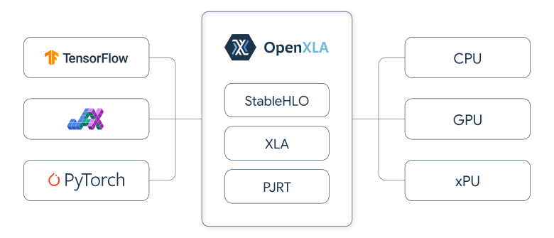
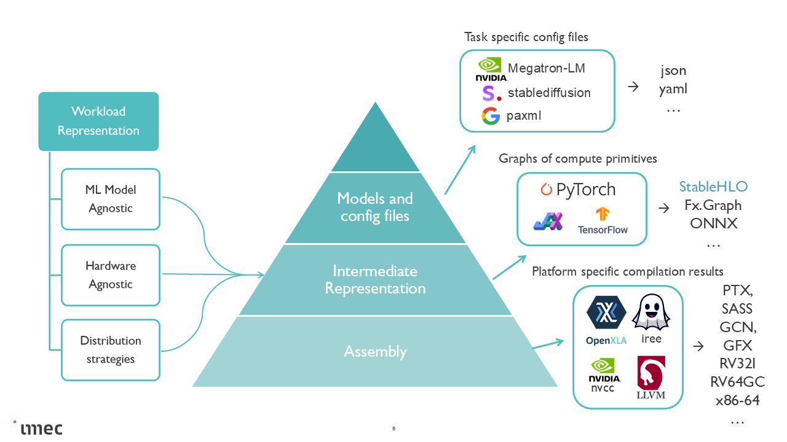

Why Hespas
One Workload Representation, Multiple Backends
ML performance prediction is a multi-dimensional, cross-stack problem. Empirical evaluation across all combinations of models, compilers, and hardware is too costly. Meanwhile, the current simulation space is fragmented:
Different simulators operate at different fidelity levels
Different hardware architectures require different tools
Different workload abstractions make cross-validation difficult
This means workloads are reimplemented or approximated per tool, which makes comparison across hardware architectures less meaningful.
Hespas takes a different approach: a single StableHLO workload representation that works across a range backends.

StableHLO: stable, framework and hardware agnostic workload representation
A StableHLO workload exported from a production ML framework JAX captures the actual computation graph, including collective communication for distributed training. From this single representation, Hespas can:
Profile on real hardware — compile and execute via XLA or IREE to obtain measured runtimes on GPUs.
Estimate analytically — apply a roofline model for fast, hardware-free exploration.
Simulate — feed into architectural simulators like COCOSSim or ONNXim for detailed bottleneck analysis.
The workload stays the same across all fidelity levels.
StableHLO

Workload abstraction levels
Unlike configuration-based descriptions that target narrow workload classes, or trace-based formats that require prior execution, StableHLO offers several advantages:
A real, compiler-compatible IR exported from production frameworks
Explicit collective communication operators for distributed training
Compiler optimizations can be applied before estimation
Framework-agnostic: works with JAX, PyTorch/XLA, and other OpenXLA frontends
Ahead-of-time: the workload can be obtained without access to target hardware
Hespas currently uses JAX as the primary frontend for exporting StableHLO workloads. JAX is particularly well suited for this purpose:
SPMD-first by default — distributed parallelism is a core part of the programming model
One global, static program — the entire computation is expressed as a single program
Static parallelism via XLA and StableHLO — parallelization decisions are made at compile time, producing a deterministic workload representation that is easy to analyze
TPU support — enables cross-architecture studies alongside GPUs